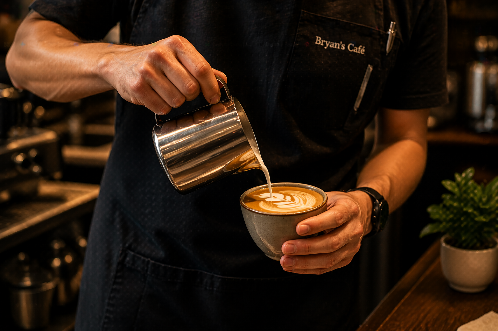
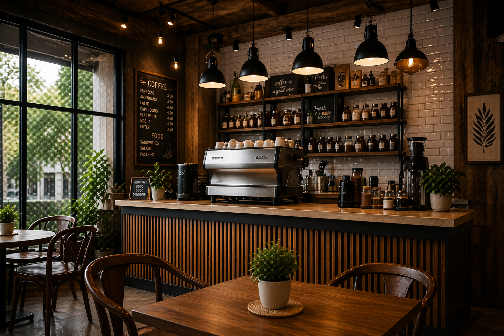

EST. 1994
Artisanal warmth in every single pour.
Experience the soul of a neighbourhood establishment, where every bean is roasted with intention and every guest is treated like a regular.

OUR PHILOSOPHY
The Ritual of Coffee
At Bryan’s Café, we believe that coffee is more than a morning necessity. It is a sensory ritual. Our beans are ethically sourced from small-batch farmers who share our passion for quality and sustainability.
Each cup is prepared with care to create a warm and memorable experience for every customer.
Expert Roasting
Precision profiles developed in-house.
Waste Conscious
Committed to eco-friendly packaging.
OUR STORY
A Legacy Since 1994
Bryan’s Café started as a small corner coffee shop with a passion for simple food, quality drinks, and friendly service. Over the years, it became a trusted meeting place for students, workers, and families.
Today, we continue that tradition by serving handcrafted meals, specialty coffee, and warm hospitality in every branch.
